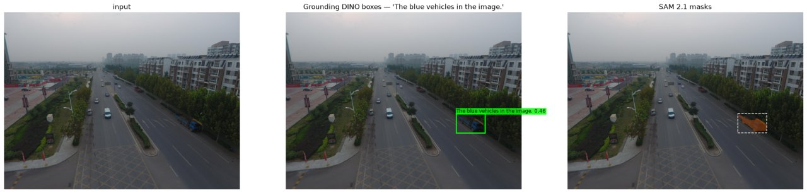
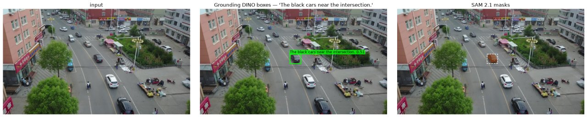
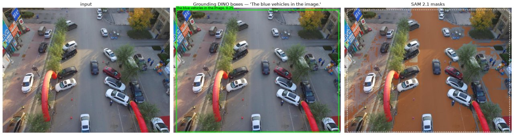
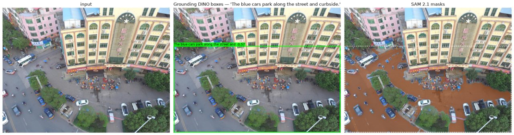
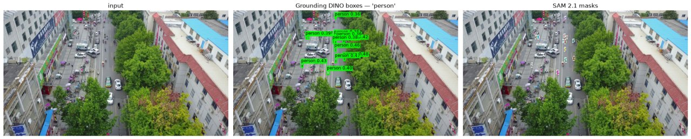
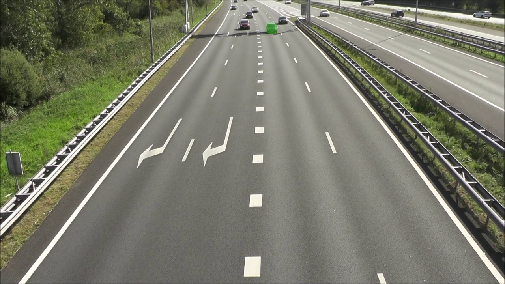

A pipeline that turns a sentence into a tracked segmentation mask — by bolting an open-vocabulary detector onto a video segmenter. Here is what it is, how it runs, what it produced on RefDrone, and exactly where it breaks.
This is the single most important thing to internalize, and it explains every result below. Grounded SAM 2 is not a trained network. It has no weights of its own, no joint training, no loss function, and no standalone paper — it is a piece of integration software from IDEA Research that chains two independently-trained models together:
Because nothing was trained end-to-end, the two halves never learned to cover for each other. Whatever the detector gets wrong, the segmenter faithfully — and beautifully — segments anyway. Hold onto that sentence; it is the entire negative result.
As a category-prompted detect-and-track pipeline
Prompt it with car or zebra and it works: 32 FPS tracking, 2.1 GB VRAM,
excellent masks, fully local. The architecture is sound and cheap.
As a referring-expression system
Prompt it with "the black cars near the intersection" and it scores 22% top-1 on RefDrone. It resolves the noun and throws the rest of the sentence away.
An open-vocabulary detector: instead of a fixed list of 80 COCO classes, it takes an arbitrary text prompt and returns boxes for whatever the text names. It never saw your class list at training time, and it needs no fine-tuning to detect a new noun.
Internally it fuses two towers. A Swin-T vision backbone encodes the image; a
BERT encoder encodes the prompt. A cross-modality feature enhancer lets the two attend to
each other, and language-guided query selection picks the image regions that best match the text.
The decoder emits (box, confidence, matched_phrase) triples.
Two consequences fall straight out of that design, and both show up in our numbers. First, it is genuinely open-vocabulary — a real capability. Second, and fatally for our use case, the text–image matching is essentially noun-level. It is a category detector wearing a language interface, not a system that reasons about which car you meant.
SAM 2 is promptable: it does not decide what to segment, it segments what you point it at. Give it a box, a click, or a mask, and it returns a pixel-accurate mask. It has no idea what a "car" is and does not care.
Three pieces matter for reading the timings later:
set_image().predict().That memory bank is what makes the whole architecture cheap. And, as we'll see, it is also the source of the nastiest failure in the entire evaluation — because a memory that never forgets has no way to say "the thing I was tracking is gone."
There are two paths through the system, and they differ in one crucial way: how often the detector runs.
The video path is the whole point of the architecture. You pay for language understanding exactly once (358 ms), and then every subsequent frame costs only SAM 2 (31 ms). That is what turns a 7 FPS detector into a 32 FPS tracker, and it is why this shape of pipeline is attractive for a drone.
It is also, precisely, why the tracker can silently lock onto the wrong object forever: with no re-detection, nothing in the loop ever re-checks the semantics.
scripts/gsam2_local.py and run_video_demo.py# IMAGE PATH — detector, then pick one box, then segment
boxes, scores, phrases, gd_ms, wh = G.gd_predict(gd, img, prompt, box_thr, text_thr)
top = int(np.argmax(scores)) # <-- top-1 selection. This is the weak link.
init_box = boxes[top]
masks, sam_ms = G.sam2_masks(predictor, image_rgb, init_box)
# VIDEO PATH — acquire once on frame 0, then propagate with memory
boxes, scores, _, gd_ms, _ = G.gd_predict(gd, frames[0], prompt) # ONCE
init_box = boxes[int(np.argmax(scores))]
del gd; torch.cuda.empty_cache() # detector is dropped entirely
state = predictor.init_state(video_path=frames_dir)
predictor.add_new_points_or_box(state, frame_idx=0, obj_id=1, box=init_box)
for fidx, obj_ids, logits in predictor.propagate_in_video(state):
masks_by_frame[fidx] = (logits[0] > 0.0) # no detector in this loop, everEverything ran locally on an RTX 3080 — no cloud API, no API key, no image upload, and (after one fix) no network at inference at all. Upstream ships six demos that call IDEA's DDS cloud API; every one of them was enumerated and avoided.
| Phase | What it did | Result |
|---|---|---|
| 1 · Smoke | One aerial image, prompts car / person | PASS |
| 2 · RefDrone | 50 (image, referring-expression) pairs, seed 1234 | Ran — accuracy is poor |
| 3 · Video | 2 clips, detect-once + SAM 2 propagation | Found a real failure mode |
| 4 · Benchmark | SAM2.1 Tiny vs Small, isolated processes | PASS |
The median IoU is 0.004. That is not a model that is nearly right — on half the expressions, the returned box has essentially zero overlap with the referent.
The mechanism is visible in the figures below. Grounding DINO resolves the category in the expression and discards the referring qualifiers. Given "the black cars near the intersection," it hears "cars" — returns ten of them — and the highest-confidence one is a dark car that simply isn't the referent. SAM 2 then segments that wrong box perfectly.
A clean, confident mask on the wrong object is the characteristic output of this pipeline. The failure is in language grounding. Nothing is wrong with the segmentation.




argmax(score) is close to arbitrary.
person on a 1920×1080 aerial frame → 13 detections,
top score 0.48 — against 0.67 for car on the same frame. Confidence erodes sharply as the
target shrinks. Relevant for anything flown at altitude.This is our protocol, not RefDrone's official metric: take the highest-confidence box, score it as max IoU against the ground-truth boxes for that expression. Do not compare it to published RefDrone numbers — the official evaluator was not run. It is, however, the protocol that matters for this pipeline, because SAM 2 must be seeded with exactly one box. It is also strict on multi-target expressions: finding 24 of 25 referenced objects and ranking the wrong one first scores zero. And RefDrone ships boxes only, no mask ground truth — so SAM 2's mask quality is assessed visually and deliberately not scored. No segmentation ground truth was invented.
Two clips, same protocol: Grounding DINO fires once on frame 0, SAM 2 propagates for 200 frames with no re-detection.
The control clip (zebra.mp4, prompt zebra) is a clean pass: 200/200 frames masked, zero
empty, zero dropouts. It even survived a mutual-occlusion event at frames 28–30, where another
zebra walked in front of the target and the mask area fell to 40% — SAM 2 wrapped the mask
around the occluder and recovered the full silhouette. When the target is present, this
tracker is genuinely good.
The second clip is where it gets interesting.
zebra.mp4, frame 199 of 200. One acquisition on frame 0,
then pure SAM 2 memory propagation. The mask is still coherent and still on the right animal 200
frames later. Not claimed: that identity survived the frame-29 occlusion — five near-identical
mutually-occluding animals and no instance ground truth means that is not certifiable, so we
don't certify it.Now tracking_car.mp4. The chart below is the per-frame mask area, straight out of
video_results_tracking_car.json. It contains the entire story.
Read it left to right. Frames 0–68 are a clean track: the mask grows smoothly from 1,592 px to 70,482 px as the car drives toward the overpass camera. No drift, no dropouts.
At frame 69 the target leaves the frame. The mask was shrinking and clipped by the bottom border — the car drove out underneath the camera. The 107 empty frames that follow are correct behaviour, not a tracking failure.
At frame 176, SAM 2 silently re-bound object id 1 to a different car — 953 px away, near the horizon — and reported it with full confidence.

tracking_car.mp4, frame 176. The car acquired on
frame 0 exited the bottom of the frame at f69 and is gone for good. Here, 107 frames later, object
id 1 has been re-bound to a different car near the horizon — that small green mask, 953 px from
where the original vanished — and it is reported with full confidence.SAM 2 has no terminal "object is gone" state and no identity check. In this architecture the detector never re-runs, so nothing ever corrects the switch. A tracker that quietly swaps targets and keeps reporting is worse than one that reports loss — downstream, you cannot tell the difference between a track and a lie.
It is also a trap for the evaluator, and we walked into it twice. Counting empty masks called those 107 frames a 53.5% tracking failure. Splitting on last-visible-frame called them dropouts that "recovered" — scoring the false positive as a success. Both are artefacts of scoring mask area alone. Only mask geometry — was it shrinking, was it clipped by a border, how far did the centroid jump — separates egress from drift from an identity switch. The harness now records per-frame area, bbox and centroid so the classification is auditable.
Three warm-ups discarded, 10 measured iterations, each config in a fresh process. Every GPU
region is timed with torch.cuda.synchronize() on both sides.
| A · SAM2.1 Tiny | B · SAM2.1 Small | |
|---|---|---|
| Warm image latency | 143 ms · 7.0 FPS | 146 ms · 6.8 FPS |
| of which Grounding DINO | 101 ms | 101 ms |
| of which SAM 2 | 42 ms | 45 ms |
| Tracking throughput | 32.5 FPS | 30.3 FPS |
| Peak VRAM (tracking) | 2,138 MB | 2,180 MB |
| Model load (cold) | 2,253 ms | 2,246 ms |
Grounding DINO is ~70% of per-image latency and is identical in both configs. Going Tiny → Small costs 3 ms per image, 2.1 FPS of tracking, and 43 MB of VRAM, and bought no visible quality anywhere. The SAM 2 backbone is not the lever on this pipeline's cost — the detector is. On Jetson, spend the headroom on the detector, and start with Tiny.
1. SAM 2 latency was decoder-only. sam2_masks() called set_image() outside the timer —
but set_image() runs the Hiera image encoder, which is the dominant, backbone-dependent stage.
predict() is just the mask decoder, which is near-identical across backbones. The tell was that
Small benchmarked faster than Tiny (12.0 vs 21.9 ms), which is impossible. Timed end-to-end,
Small is correctly slower (45 vs 42 ms). Every SAM 2 latency reported before that fix was too low.
2. Config B was free-riding on config A's warm process. Run back-to-back, B appeared to load in 630 ms against A's 1,963 ms. Isolated into its own process: 2,253 vs 2,246 ms. The entire gap was CUDA-context and page-cache carry-over.
Each phase writes a JSON result file to results/, and summarize_results.py regenerates
summary.md from those files — every number in the write-up is read from a result file, none is
transcribed by hand. Rendered visualizations land in outputs/ (gitignored — full videos, every
frame), and make_figures.py curates the seven committed figures above into figures/.
{
"split": "train",
"file_name": "0000309_04401_d_0000355.jpg",
"expression": "The black cars near the intersection.",
"n_gt_boxes": 1,
"n_detections": 10, // GD found ten "cars"
"top_score": 0.5057, // and was confident about the wrong one
"pred_box": [652.9, 326.4, 731.1, 396.2],
"best_iou": 0.0, // <-- zero overlap with the referent
"hit_at_50": false,
"gd_latency_ms": 101.6,
"sam2_latency_ms": 23.7,
"mask_pixels": 3220 // a perfect mask, on the wrong car
}| File | What's in it |
|---|---|
| results/refdrone_results.json | 50 records like the above + aggregate metrics |
| results/video_results_*.json | per-frame area, bbox, centroid; gap classification |
| results/benchmark.json / .csv | config A vs B, load / cold / warm / p95 |
| results/environment.json | GPU, driver, versions, CUDA-ext + network posture |
| results/summary.md | the full write-up, generated from the above |
| figures/01–07 | the seven curated figures on this page |
strace, not assumed: an unguarded
run opens real outbound connections to huggingface.co, because Grounding DINO's text encoder
calls from_pretrained("bert-base-uncased") and transformers revalidates the cached files
against the hub on every load. No imagery is uploaded — it is a metadata fetch — but it is a
blocker for an air-gapped target. The adapter now forces HF_HUB_OFFLINE=1 before transformers
imports; re-verified with strace as zero AF_INET connect() syscalls, identical detections.checkpoints/. It lives in ~/.cache/huggingface
(~421 MB) and must be staged separately on an air-gapped device, or Grounding DINO will not load
at all.MultiScaleDeformableAttention CUDA extension must be compiled for the target's
compute capability. Upstream's pure-PyTorch fallback is gated on torch.cuda.is_available() —
not on whether the extension loaded — so on a GPU box without it, Grounding DINO crashes rather
than degrading.The engineering holds up. Fully local, 32 FPS tracking, 2.1 GB peak VRAM, excellent segmentation,
a sound and cheap architecture, and it degrades honestly — it raises rather than silently
falling back to CPU. Prompted with car or person, it works, and the VRAM/throughput
envelope fits a Jetson-class target.
But if the intended capability is "describe one specific object in natural language and track it," this pipeline does not deliver that today — and no amount of SAM 2 tuning will change it, because SAM 2 is not what is failing.
The reason this lands on PROMISING rather than reference only is worth stating plainly: the weak component is the replaceable one. The expensive, hard part — real-time memory-based segmentation that survives occlusion — is the part that works.